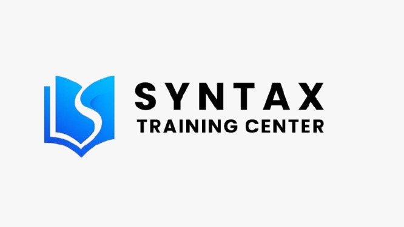

created by : Syahrizal As
Bahasa standar yang digunakan untuk mengelola dan memanipulasi basis data relasional, seperti mengambil, menambahkan, atau mengubah data.
SELECT - Mengambil data
INSERT - Menambahkan data
UPDATE - Mengubah data
DELETE - Menghapus data
SELECT * FROM users WHERE nama='John'
Instruksi untuk mengambil seluruh baris dari tabel 'users' di mana nilai pada kolom 'nama' adalah 'John'.
Framework PHP berarsitektur MVC
Library JavaScript untuk UI terinteraktif
Framework progresif JavaScript
Framework CSS untuk komponen antarmuka
Framework mempercepat siklus pengembangan, memastikan struktur kode yang lebih rapi, dan mencegah pembuatan komponen standar dari awal.
User Acceptance Testing merupakan tahapan pengujian akhir oleh pengguna untuk memastikan aplikasi beroperasi sesuai spesifikasi dan kebutuhan bisnis.
Pembuatan skenario pengujian Pengguna melakukan validasi fitur Pencatatan hasil Perbaikan bug dan penyesuaian.
Validasi alur checkout e-commerce: Pengguna memilih produk menambahkan ke keranjang melakukan pembayaran transaksi berhasil ✅
Memastikan performa, ketersediaan, dan keandalan sistem tetap optimal, serta mendeteksi potensi masalah sebelum berdampak pada pengguna.
Meninggalkan tools generik, ekosistem Laravel memiliki alat bantu pantau bawaan:
• Laravel Telescope (Insight request & query)
• Laravel Horizon (Dashboard antrean Redis)
• Log Viewer (Pemantauan file log via GUI)
Menganalisis potensi kerentanan sistem terhadap serangan siber, peretasan, malware, atau eksploitasi data sensitif.
Integritas dan kerahasiaan data pengguna terjamin, ketersediaan sistem dipertahankan, serta meningkatkan kredibilitas produk perangkat lunak.
Menjadwalkan waktu eksekusi, menugaskan personel teknis, dan menginventarisasi kebutuhan infrastruktur operasional.
Melakukan pencadangan (backup) menyeluruh untuk memastikan integritas dan ketersediaan data selama proses transisi berlangsung.
Memindahkan arsitektur sistem dari lingkungan lama ke platform baru sesuai tenggat waktu yang telah ditetapkan.
Mendefinisikan tujuan proyek, estimasi linimasa (timeline), dan struktur hierarki tim pelaksana.
Memastikan komunikasi lintas divisi berjalan transparan agar kolaborasi tim tetap efisien dan produktif.
Mengawasi perkembangan capaian proyek dan merumuskan resolusi strategis ketika muncul kendala operasional.
VS Code, PHPStorm - lingkungan pengembangan terintegrasi.
Sistem kontrol versi (VCS) untuk pelacakan kode dan kolaborasi.
Platform manajemen penugasan (task) dan pelacakan isu metodologi Agile.
PHPUnit, Jest - framework khusus untuk otomatisasi pengujian kode.
Kuasai secara mendalam prinsip dasar pemrograman, struktur data, algoritma, serta arsitektur basis data relasional.
Terapkan landasan teori ke dalam praktik. Bangun portofolio teknis melalui pengerjaan proyek pengembangan perangkat lunak nyata.
Ekosistem teknologi web berevolusi dengan cepat, sehingga kemampuan adaptasi dan pembelajaran berkesinambungan adalah prasyarat utama.